Jingyu Gong is an Associate Researcher with the School of Computer Science and Technology, East China Normal University, China. He is a member of Digital Media and Computer Vision Laboratory, working closely with Prof. Lizhuang Ma.
He received his B.S. and Ph.D. degree from Shanghai Jiao Tong University, China, in 2019 and 2024 respectively. His research interests include computer 3D vision and computer graphics.
[2025.07.05]4 paper accepted by AAAI 2026.
[2025.09.01]I won the 2025 CGS Excellent Doctoral Dissertation (2025年度中国图学学会优秀博士学位论文激励计划).
[2025.07.05]1 paper accepted by ACM MM 2025.
[2024.12.10]1 paper accepted by CVPR 2025.
[2024.12.10]1 paper accepted by AAAI 2025.
[2024.07.16]1 paper accepted by ACM MM 2024.
[2024.07.04]1 paper accepted by ECCV 2024.
[2024.03.20]1 paper accepted by TCVG.
[2024.02.27]1 paper accepted by TVC.
[2023.09.23]1 paper accepted by TPAMI.
[2023.02.20]1 paper accepted by Journal of Image and Graphics (in Chinese).
[2022.07.04]1 paper accepted by ECCV 2022.
[2021.10.03]1 paper accepted by 3DV 2021.
[2021.05.29]1 paper accepted by CVMJ.
[2021.03.01]1 paper accepted by CVPR 2021.
[2020.12.02]1 paper accepted by AAAI 2021.
[2020.04.20]1 paper accepted by IJCAI 2020.
I am looking for self-motivated master and undergraduate students to join our research group! If you are interested in 3D vision, computer graphics and want to join us, please send me your CV via email.
团队长期招收硕士生，博士生和对科研感兴趣的本科生！如果你对计算机三维视觉、计算机图形学感兴趣并希望加入我们华东师范大学团队，欢迎与我邮件联系（邮件请附上个人简历）。
I appreciate the organizations listed below for the sponsorship to my research.
(* joint first author, # corresponding author)
Summary: CVPR/ECCV (4) + AAAI/IJCAI/ACM MM (4) + IEEE TPAMI (1) + IEEE TVCG (1)
| 2025 |
| 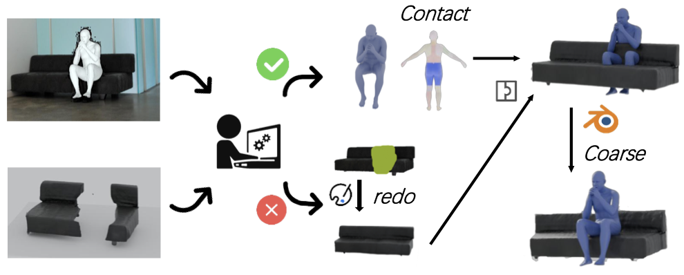 |
Reconstructing In-the-Wild Open-Vocabulary Human-Object Interactions
Boran Wen, Dingbang Huang, Zichen Zhang, Jiahong Zhou, Jianbin Deng, Jingyu Gong, Yulong Chen, Lizhuang Ma, Yong-Lu Li
IEEE Conference on Computer Vision and Pattern Recognition (CVPR), 2025 [CCF A]
|
| 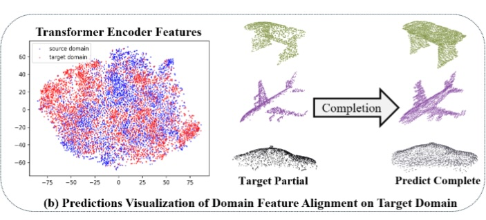 |
DAPoinTr: Domain Adaptive Point Transformer for Point Cloud Completion
Yinhui Li*, Qianyu Zhou*, Jingyu Gong, Ye Zhu, Richard Dazeley, Xinkui Zhao, Xuequan Lu
AAAI Conference on Artificial Intelligence (AAAI), 2025 [CCF A]
|
| 2024 |
| 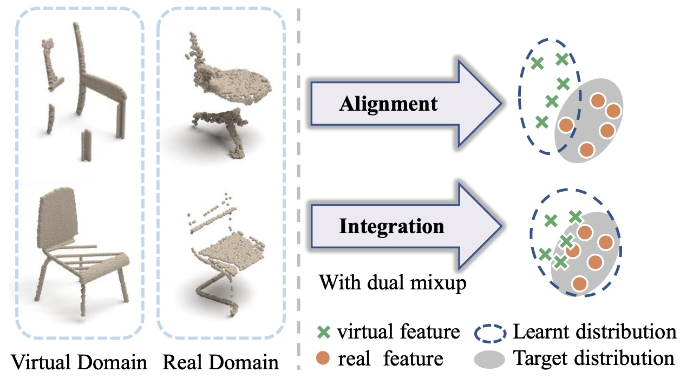 |
CloudMix: Dual Mixup Consistency for UnpairedPoint Cloud Completion [paper]
Fengqi Liu*, Jingyu Gong*, Qianyu Zhou, Xuequan Lu, Ran Yi, Yuan Xie, Lizhuang Ma
IEEE Transactions on Visualization and Computer Graphics (TVCG), 2024 [CCF A]
|
| 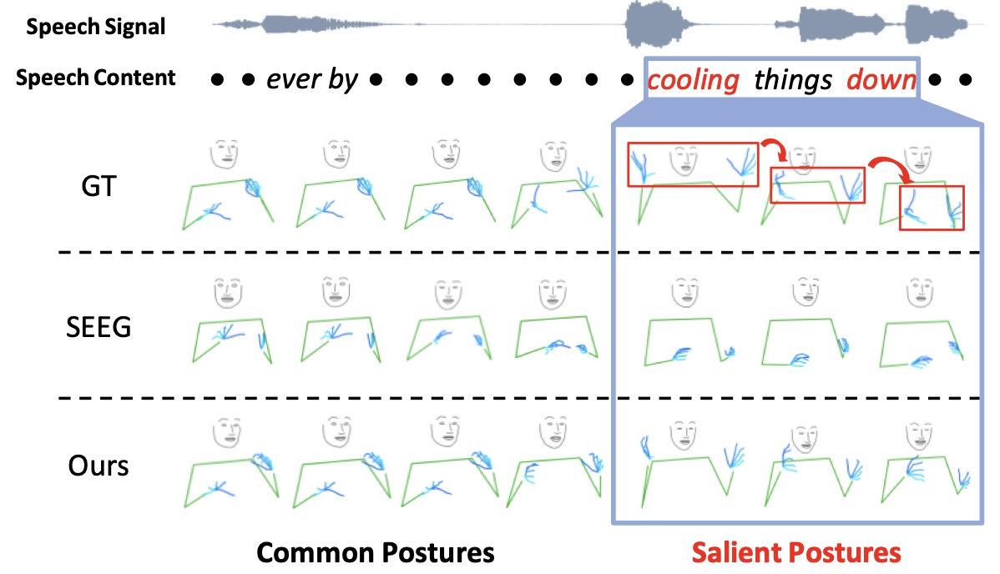 |
Emphasizing Semantic Consistency of Salient Posture for Speech-Driven Gesture Generation [paper]
Fengqi Liu*, Hexiang Wang*, Jingyu Gong*, Ran Yi, Qianyu Zhou, Xuequan Lu, Jiangbo Lu, Lizhuang Ma
ACM International Conference on Multimedia (ACM MM), 2024 [CCF A]
|
| 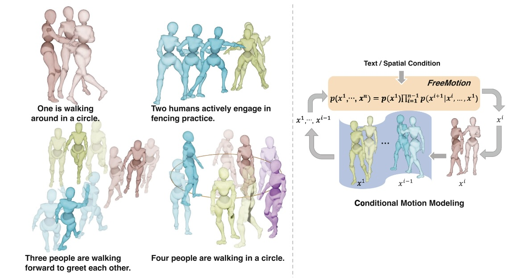 |
FreeMotion: A Unified Framework for Number-free Text-to-Motion Synthesis [paper]
Ke Fan, Junshu Tang, Weijian Cao, Ran Yi, Moran Li, Jingyu Gong, Jiangning Zhang, Yabiao Wang, Chengjie Wang, Lizhuang Ma
European Conference on Computer Vision (ECCV), 2024 [CCF B]
|
| 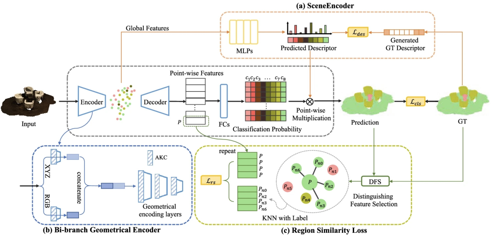 |
Learnable scene prior for point cloud semantic segmentation [paper]
[code]
Yuanhao Chai, Jingyu Gong#, Xin Tan, Jiachen Xu, Yuan Xie, Lizhuang Ma
The Visual Computer (TVC), 2024 [CCF C]
|
| 2023 |
| 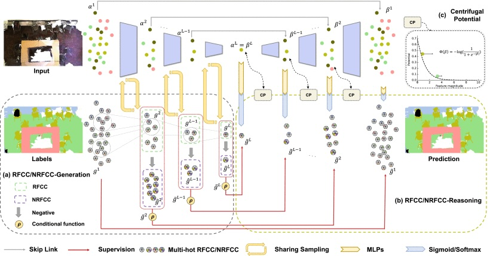 |
Positive-Negative Receptive Field Reasoning for Omni-Supervised 3D Segmentation [paper]
Xin Tan, Qihang Ma, Jingyu Gong, Jiachen Xu, Zhizhong Zhang, Haichuan Song, Yanyun Qu, Yuan Xie, Lizhuang Ma
IEEE Transactions on Pattern Analysis and Machine Intelligence (TPAMI), 2023 [CCF A]
|
| 2022 |
| 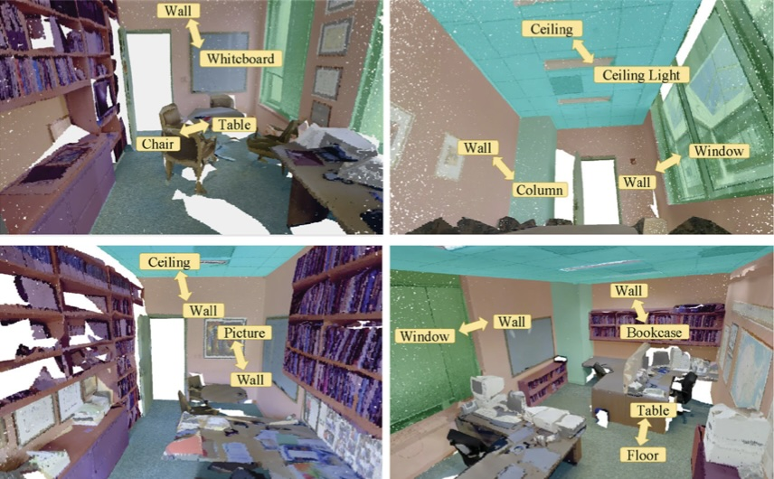 |
Neighborhood co-occurrence modeling in 3D point cloud segmentation [paper]
Jingyu Gong, Zhou Ye, Lizhuang Ma
Computational Visual Media (CVM), 2022 [CCF C]
|
| 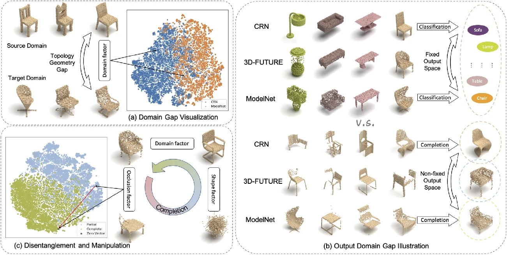 |
Optimization over Disentangled Encoding: Unsupervised Cross-Domain Point Cloud Completion via Occlusion Factor Manipulation [paper]
[code]
Jingyu Gong*, Fengqi Liu*, Jiachen Xu, Min Wang, Xin Tan, Zhizhong Zhang, Ran Yi, Haichuan Song, Yuan Xie, Lizhuang Ma
European Conference on Computer Vision (ECCV), 2022 [CCF B]
|
| 2021 |
| 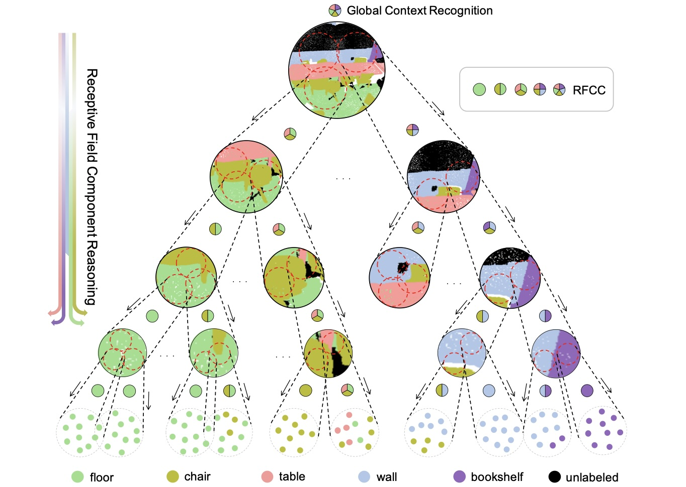 |
Omni-supervised Point Cloud Segmentation via Gradual Receptive Field Component Reasoning [paper]
[code]
Jingyu Gong, Jiachen Xu, Xin Tan, Haichuan Song, Yanyun Qu, Yuan Xie, Lizhuang Ma
IEEE Conference on Computer Vision and Pattern Recognition (CVPR), 2021 [CCF A]
|
| 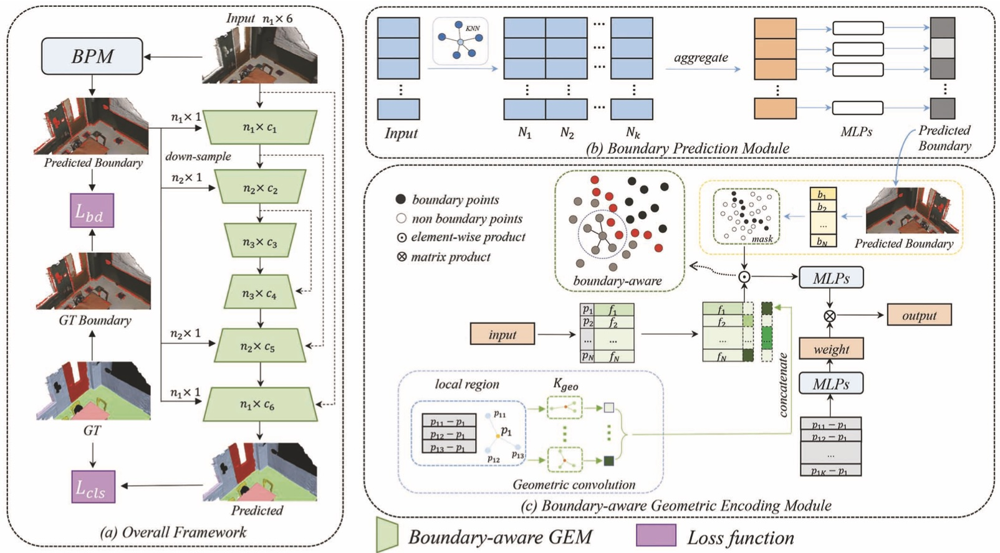 |
Boundary-Aware Geometric Encoding for Semantic Segmentation of Point Clouds [paper]
[code]
Jingyu Gong*, Jiachen Xu*, Xin Tan, Jie Zhou, Yanyun Qu, Yuan Xie, Lizhuang Ma
AAAI Conference on Artificial Intelligence (CVPR), 2021 [CCF A]
|
| 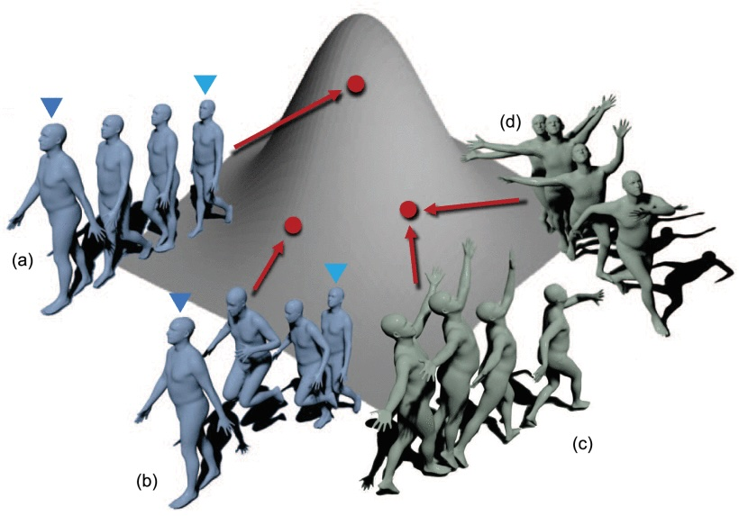 |
Exploring Versatile Prior for Human Motion via Motion Frequency Guidance [paper]
[code]
Jiachen Xu, Min Wang, Jingyu Gong, Wentao Liu, Chen Qian, Yuan Xie, Lizhuang Ma
International Conference on 3D Vision (3DV), 2021 [CCF C]
|
| 2020 |
| 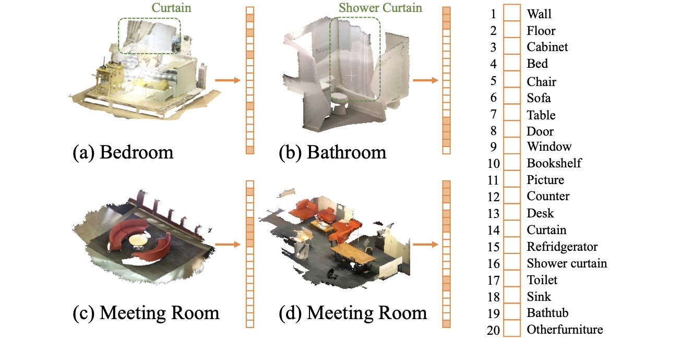 |
SceneEncoder: Scene-Aware Semantic Segmentation of Point Clouds with A Learnable Scene Descriptor [paper]
[code]
Jiachen Xu*, Jingyu Gong*, Jie Zhou, Xin Tan, Yuan Xie, Lizhuang Ma
International Joint Conference on Artificial Intelligence (IJCAI), 2020 [CCF A]
|